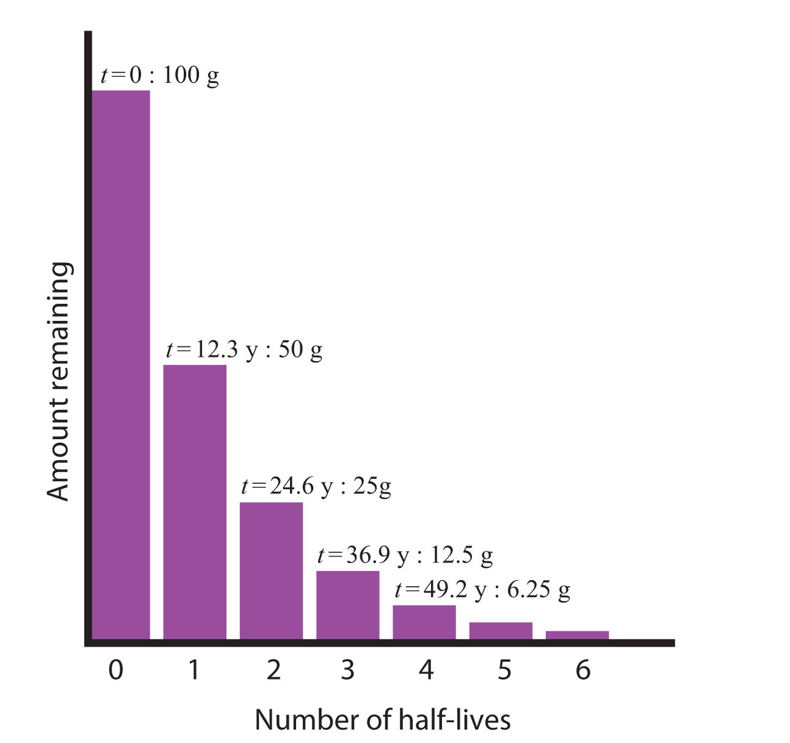
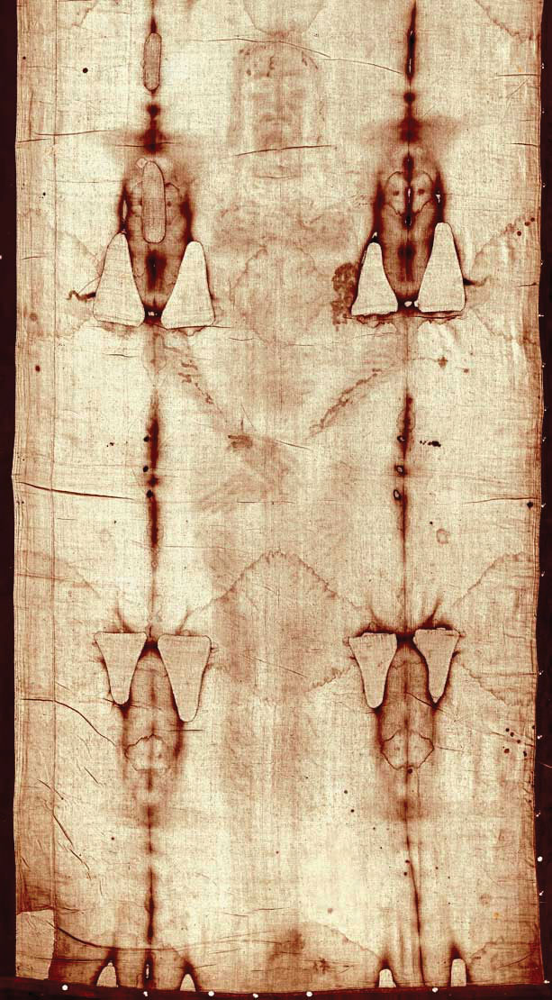
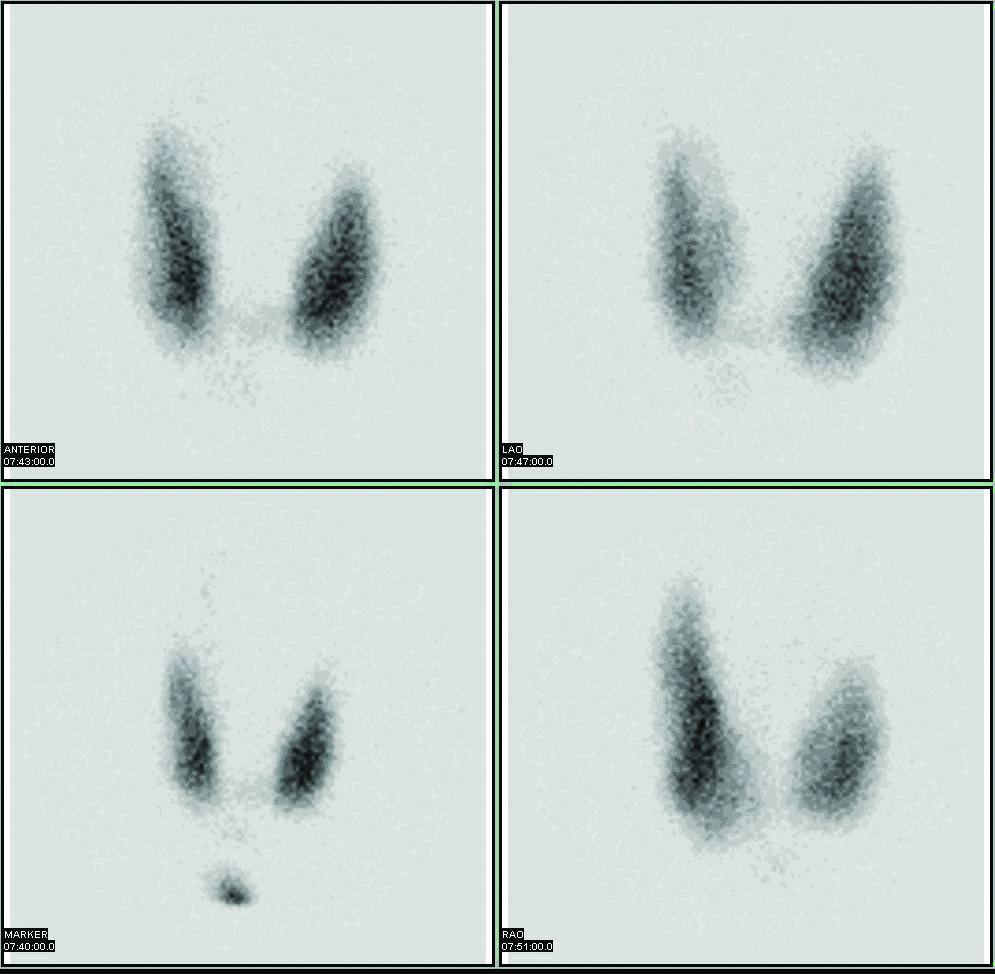
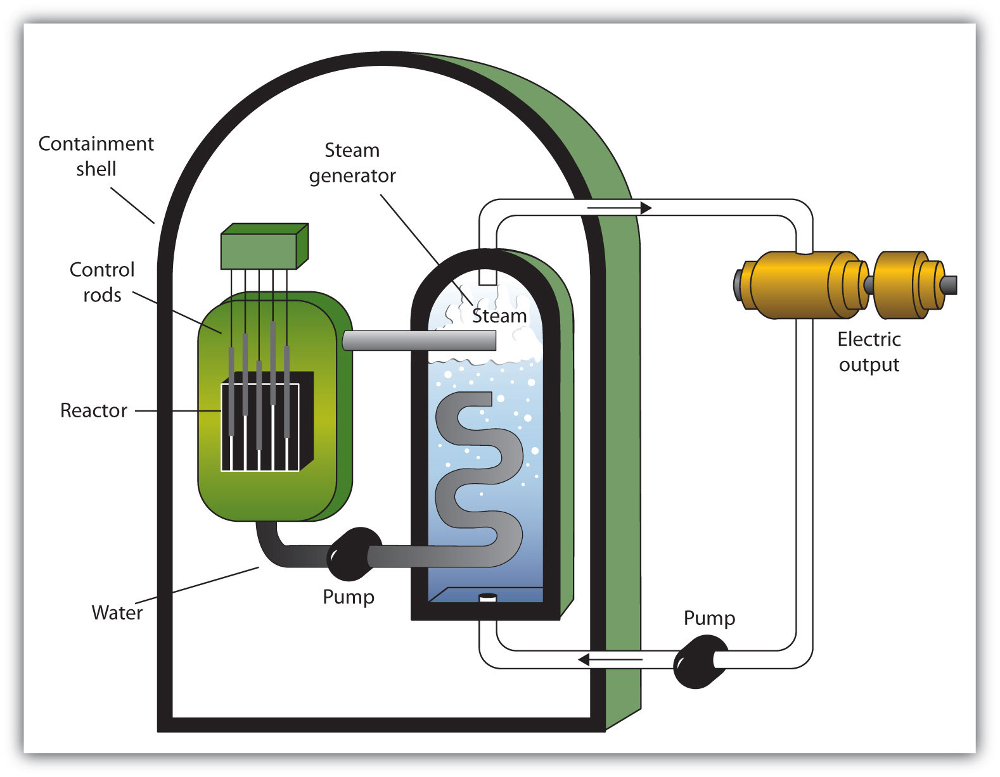

Most of us have at least one device in our homes that guards our safety and, at the same time, depends on radioactivity to operate properly. This device is a smoke detector.
A typical smoke detector contains an electric circuit that includes two metal plates about 1 cm apart. A battery in the circuit creates a voltage between the plates. Next to the plates is a small disk containing a tiny amount (∼0.0002 g) of the radioactive element americium. The radioactivity of americium ionizes the air between the plates, causing a tiny current to constantly flow between them. (This constant drain on the battery explains why the batteries in smoke detectors should be replaced regularly, whether the alarm has been triggered or not.)
When particles of smoke from a fire enter the smoke detector, they interfere with the ions between the metal plates, interrupting the flow of current. When the current drops beneath a set value, another circuit triggers a loud alarm, warning of the possible presence of fire.
Although radioactive, the americium in a smoke detector is embedded in plastic and is not harmful unless the plastic package is taken apart, which is unlikely. Although many people have an unfounded fear of radioactivity, smoke detectors save thousands of lives every year.
Most chemists pay little attention to the nucleus of an atom except to consider the number of protons it contains because that determines an element’s identity. However, in nuclear chemistry, the composition of the nucleus and the changes that occur there are very important.
Applications of nuclear chemistry may be more widespread than you realize. Many people are aware of nuclear power plants and nuclear bombs, but nuclear chemistry also has applications ranging from smoke detectors to medicine, from the sterilization of food to the analysis of ancient artifacts. In this chapter, we will examine some of the basic concepts of nuclear chemistry and some of the nuclear reactions that are important in our everyday lives.
We saw in Chapter 3 "Atoms, Molecules, and Ions" that atoms are composed of subatomic particles—protons, neutrons, and electrons. Protons and neutrons are located in the nucleus and provide most of the mass of an atom, while electrons circle the nucleus in shells and subshells and account for an atom’s size.
We also introduced in Chapter 3 "Atoms, Molecules, and Ions" the notation for succinctly representing an isotope of a particular atom:
The element in this example, represented by the symbol C, is carbon. Its atomic number, 6, is the subscript next to the symbol and is the number of protons in the atom. The mass number, the superscript next to the symbol, is the sum of the number of protons and neutrons in the nucleus of this particular isotope. In this case, the mass number is 12, which means that the number of neutrons in the atom is 12 − 6 = 6 (that is, the mass number of the atom minus the number of protons in the nucleus equals the number of neurons). Occasionally, the atomic number is omitted in this notation because the symbol of the element itself conveys its characteristic atomic number. The two isotopes of hydrogen—2H and 3H—are given their own names and symbols: deuterium (D) and tritium (T), respectively.
Atomic theory in the nineteenth century presumed that nuclei had fixed compositions. But in 1896, the French scientist Henri Becquerel found that a uranium compound placed near a photographic plate made an image on the plate, even if the compound was wrapped in black cloth. He reasoned that the uranium compound was emitting some kind of radiation that passed through the cloth to expose the photographic plate. Further investigations showed that the radiation was a combination of particles and electromagnetic rays, with its ultimate source being the atomic nucleus. These emanations were ultimately called, collectively, radioactivityEmanations of particles and radiation from atomic nuclei..
There are three main forms of radioactive emissions. The first is called an alpha particleA type of radioactive emission equivalent to a helium nucleus., which is symbolized by the Greek letter α. An alpha particle is composed of two protons and two neutrons and is the same as a helium nucleus. (We often use to represent an alpha particle.) It has a 2+ charge. When a radioactive atom emits an alpha particle, the original atom’s atomic number decreases by two (because of the loss of two protons), and its mass number decreases by four (because of the loss of four nuclear particles). We can represent the emission of an alpha particle with a chemical equation—for example, the alpha-particle emission of uranium-235 is as follows:
Rather than calling this equation a chemical equation, we call it a nuclear equationA chemical equation that emphasizes changes in atomic nuclei. to emphasize that the change occurs in an atomic nucleus. How do we know that a product of this reaction is ? We use the law of conservation of matter, which says that matter cannot be created or destroyed. This means we must have the same number of protons and neutrons on both sides of the nuclear equation. If our uranium nucleus loses 2 protons, there are 90 protons remaining, identifying the element as thorium. Moreover, if we lose four nuclear particles of the original 235, there are 231 remaining. Thus we use subtraction to identify the isotope of the Th atom—in this case,
Chemists often use the names parent isotopeThe reactant in a nuclear equation. and daughter isotopeThe product left over from the parent isotope in a nuclear equation. to represent the original atom and the product other than the alpha particle. In the previous example,
is the parent isotope, and is the daughter isotope. When one element changes into another in this manner, it undergoes radioactive decayThe spontaneous change of a nucleus from one element to another..
Write the nuclear equation that represents the radioactive decay of radon-222 by alpha particle emission and identify the daughter isotope.
Solution
Radon has an atomic number of 86, so the parent isotope is represented as We represent the alpha particle as and use subtraction (222 − 4 = 218 and 86 − 2 = 84) to identify the daughter isotope as polonium:
Test Yourself
Write the nuclear equation that represents radioactive decay of polonium-208 by alpha particle emission and identify the daughter isotope.
Answer
daughter isotope:
The second major type of radioactive emission is called a beta particleA type of radioactive emission equivalent to an electron., symbolized by the Greek letter β. A beta particle is an electron ejected from the nucleus (not from the shells of electrons about the nucleus) and has a 1− charge. We can also represent a beta particle as The net effect of beta particle emission on a nucleus is that a neutron is converted to a proton. The overall mass number stays the same, but because the number of protons increases by one, the atomic number goes up by one. Carbon-14 decays by emitting a beta particle:
Again, the sum of the atomic numbers is the same on both sides of the equation, as is the sum of the mass numbers. (Note that the electron is assigned an “atomic number” of –1, equal to its charge.)
The third major type of radioactive emission is not a particle but rather a very energetic form of electromagnetic radiation called gamma raysA type of radioactive emission that is a very energetic form of electromagnetic radiation., symbolized by the Greek letter γ. Gamma rays themselves do not carry an overall electrical charge, but they may knock electrons out of atoms in a sample of matter and make it electrically charged (for which gamma rays are termed ionizing radiation). For example, in the radioactive decay of radon-222, both alpha and gamma radiation are emitted, with the latter having an energy of 8.2 × 10−14 J per nucleus decayed:
This may not seem like much energy, but if 1 mol of Rn atoms were to decay, the gamma ray energy would be 4.9 × 107 kJ!
Write the nuclear equation that represents the radioactive decay of boron-12 by beta particle emission and identify the daughter isotope. A gamma ray is emitted simultaneously with the beta particle.
Solution
The parent isotope is while one of the products is So that the mass and atomic numbers have the same value on both sides, the mass number of the daughter isotope must be 12, and its atomic number must be 6. The element having an atomic number of 6 is carbon. Thus the complete nuclear equation is as follows:
The daughter isotope is carbon-12.
Test Yourself
Write the nuclear equation that represents the radioactive decay of technetium-133 by beta particle emission and identify the daughter isotope. A gamma ray is emitted simultaneously with the beta particle.
Answer
daughter isotope: ruthenium-133
Alpha, beta, and gamma emissions have different abilities to penetrate matter. The relatively large alpha particle is easily stopped by matter (although it may impart a significant amount of energy to the matter it contacts). Beta particles penetrate slightly into matter, perhaps a few centimeters at most. Gamma rays can penetrate deeply into matter and can impart a large amount of energy into the surrounding matter. Table 15.1 "The Three Main Forms of Radioactive Emissions" summarizes the properties of the three main types of radioactive emissions.
Table 15.1 The Three Main Forms of Radioactive Emissions
| Characteristic | Alpha Particles | Beta Particles | Gamma Rays |
|---|---|---|---|
| symbols | α, | β, | γ |
| identity | helium nucleus | electron | electromagnetic radiation |
| charge | 2+ | 1− | none |
| mass number | 4 | 0 | 0 |
| penetrating power | minimal (will not penetrate skin) | short (will penetrate skin and some tissues slightly) | deep (will penetrate tissues deeply) |
Occasionally, an atomic nucleus breaks apart into smaller pieces in a radioactive process called spontaneous fission (or fission)The breaking apart of an atomic nucleus into smaller nuclei.. Typically, the daughter isotopes produced by fission are a varied mix of products, rather than a specific isotope as with alpha and beta particle emission. Often, fission produces excess neutrons that will sometimes be captured by other nuclei, possibly inducing additional radioactive events. Uranium-235 undergoes spontaneous fission to a small extent. One typical reaction is
where is a neutron. As with any nuclear process, the sums of the atomic numbers and mass numbers must be the same on both sides of the equation. Spontaneous fission is found only in large nuclei. The smallest nucleus that exhibits spontaneous fission is lead-208. (Fission is the radioactive process used in nuclear power plants and one type of nuclear bomb.)
Define radioactivity.
Give an example of a radioactive element. How do you know if it is radioactive?
How many protons and neutrons are in each isotope?
How many protons and neutrons are in each isotope?
Describe an alpha particle. What nucleus is it equivalent to?
Describe a beta particle. What subatomic particle is it equivalent to?
What are gamma rays?
Why is it inappropriate to refer to gamma rays as “gamma particles”?
Plutonium has an atomic number of 94. Write the nuclear equation for the alpha particle emission of plutonium-244. What is the daughter isotope?
Francium has an atomic number of 87. Write the nuclear equation for the alpha particle emission of francium-212. What is the daughter isotope?
Tin has an atomic number of 50. Write the nuclear equation for the beta particle emission of tin-121. What is the daughter isotope?
Technetium has an atomic number of 43. Write the nuclear equation for the beta particle emission of technetium-99. What is the daughter isotope?
Energies of gamma rays are typically expressed in units of megaelectron volts (MeV), where 1 MeV = 1.602 × 10−13 J. Using the data provided in the text, calculate the energy in megaelectron volts of the gamma ray emitted when radon-222 decays.
The gamma ray emitted when oxygen-19 gives off a beta particle is 0.197 MeV. What is its energy in joules? (See Exercise 13 for the definition of a megaelectron volt.)
Which penetrates matter more deeply—alpha particles or beta particles? Suggest ways to protect yourself against both particles.
Which penetrates matter more deeply—alpha particles or gamma rays? Suggest ways to protect yourself against both emissions.
Define nuclear fission.
What general characteristic is typically necessary for a nucleus to undergo spontaneous fission?
Radioactivity is the spontaneous emission of particles and electromagnetic radiation from nuclei of unstable atoms.
An alpha particle is a collection of two protons and two neutrons and is equivalent to a helium nucleus.
Gamma rays are high-energy electromagnetic radiation given off in radioactive decay.
daughter isotope: 240U
daughter isotope: 121Sb
0.51 MeV
Beta particles penetrate more. A thick wall of inert matter is sufficient to block both particles.
Nuclear fission is the breaking down of large nuclei into smaller nuclei, usually with the release of excess neutrons.
Whether or not a given isotope is radioactive is a characteristic of that particular isotope. Some isotopes are stable indefinitely, while others are radioactive and decay through a characteristic form of emission. As time passes, less and less of the radioactive isotope will be present, and the level of radioactivity decreases. An interesting and useful aspect of radioactive decay is half-lifeThe amount of time it takes for one-half of a radioactive isotope to decay., which is the amount of time it takes for one-half of a radioactive isotope to decay. The half-life of a specific radioactive isotope is constant; it is unaffected by conditions and is independent of the initial amount of that isotope.
Consider the following example. Suppose we have 100.0 g of tritium (a radioactive isotope of hydrogen). It has a half-life of 12.3 y. After 12.3 y, half of the sample will have decayed from hydrogen-3 to helium-3 by emitting a beta particle, so that only 50.0 g of the original tritium remains. After another 12.3 y—making a total of 24.6 y—another half of the remaining tritium will have decayed, leaving 25.0 g of tritium. After another 12.3 y—now a total of 36.9 y—another half of the remaining tritium will have decayed, leaving 12.5 g. This sequence of events is illustrated in Figure 15.1 "Radioactive Decay".
Figure 15.1 Radioactive Decay
During each successive half-life, half of the initial amount will radioactively decay.
We can determine the amount of a radioactive isotope remaining after a given number half-lives by using the following expression:
where n is the number of half-lives. This expression works even if the number of half-lives is not a whole number.
The half-life of fluorine-20 is 11.0 s. If a sample initially contains 5.00 g of fluorine-20, how much remains after 44.0 s?
Solution
If we compare the time that has passed to the isotope’s half-life, we note that 44.0 s is exactly 4 half-lives, so using the previous expression, n = 4. Substituting and solving results in the following:
Less than one-third of a gram of fluorine-20 remains.
Test Yourself
The half-life of titanium-44 is 60.0 y. A sample of titanium contains 0.600 g of titanium-44. How much remains after 240.0 y?
Answer
0.0375 g
Half-lives of isotopes range from fractions of a microsecond to billions of years. Table 15.2 "Half-Lives of Various Isotopes" lists the half-lives of some isotopes.
Table 15.2 Half-Lives of Various Isotopes
| Isotope | Half-Life |
|---|---|
| 3H | 12.3 y |
| 14C | 5730 y |
| 40K | 1.26 × 109 y |
| 51Cr | 27.70 d |
| 90Sr | 29.1 y |
| 131I | 8.04 d |
| 222Rn | 3.823 d |
| 235U | 7.04 × 108 y |
| 238U | 4.47 × 109 y |
| 241Am | 432.7 y |
| 248Bk | 23.7 h |
| 260Sg | 4 ms |
You may not think of yourself as radioactive, but you are. A small portion of certain elements in the human body are radioactive and constantly undergo decay. The following table summarizes radioactivity in the normal human body.
| Radioactive Isotope | Half-Life (y) | Isotope Mass in the Body (g) | Activity in the Body (decays/s) |
|---|---|---|---|
| 40K | 1.26 × 109 | 0.0164 | 4,340 |
| 14C | 5,730 | 1.6 × 10−8 | 3,080 |
| 87Rb | 4.9 × 1010 | 0.19 | 600 |
| 210Pb | 22.3 | 5.4 × 10−10 | 15 |
| 3H | 12.3 | 2 × 10−14 | 7 |
| 238U | 4.47 × 109 | 1 × 10−4 | 5 |
| 228Ra | 5.76 | 4.6 × 10−14 | 5 |
| 226Ra | 1,620 | 3.6 × 10−11 | 3 |
The average human body experiences about 8,000 radioactive decays/s.
Most of the radioactivity in the human body comes from potassium-40 and carbon-14. Potassium and carbon are two elements that we absolutely cannot live without, so unless we can remove all the radioactive isotopes of these elements, there is no way to escape at least some radioactivity. There is debate about which radioactive element is more problematic. There is more potassium-40 in the body than carbon-14, and it has a much longer half-life. Potassium-40 also decays with about 10 times more energy than carbon-14, making each decay potentially more problematic. However, carbon is the element that makes up the backbone of most living molecules, making carbon-14 more likely to be present around important molecules, such as proteins and DNA molecules. Most experts agree that while it is foolhardy to expect absolutely no exposure to radioactivity, we can and should minimize exposure to excess radioactivity.
What if the elapsed time is not an exact number of half-lives? We can still calculate the amount of material we have left, but the equation is more complicated. The equation is
where e is the base of natural logarithms (2.71828182…), t is the elapsed time, and t1/2 is the half-life of the radioactive isotope. The variables t and t1/2 should have the same units of time, and you may need to make sure you know how to evaluate natural-logarithm powers on your calculator (for many calculators, there is an “inverse logarithm” function that you can use; consult your instructor if you are not sure how to use your calculator). Although this is a more complicated formula, the length of time t need not be an exact multiple of half-lives.
The half-life of fluorine-20 is 11.0 s. If a sample initially contains 5.00 g of fluorine-20, how much remains after 60.0 s?
Solution
Although similar to Example 3, the amount of time is not an exact multiple of a half-life. Here we identify the initial amount as 5.00 g, t = 60.0 s, and t1/2 = 11.0 s. Substituting into the equation:
amount remaining = (5.00 g) × e−(0.693)(60.0 s)/11.0 sEvaluating the exponent (and noting that the s units cancel), we get
amount remaining = (5.00 g) × e−3.78Solving, the amount remaining is 0.114 g. (You may want to verify this answer to confirm that you are using your calculator properly.)
Test Yourself
The half-life of titanium-44 is 60.0 y. A sample of titanium contains 0.600 g of titanium-44. How much remains after 100.0 y?
Answer
0.189 g
Do all isotopes have a half-life? Explain your answer.
Which is more radioactive—an isotope with a long half-life or an isotope with a short half-life?
How long does it take for 1.00 g of palladium-103 to decay to 0.125 g if its half-life is 17.0 d?
How long does it take for 2.00 g of niobium-94 to decay to 0.0625 g if its half-life is 20,000 y?
It took 75 y for 10.0 g of a radioactive isotope to decay to 1.25 g. What is the half-life of this isotope?
It took 49.2 s for 3.000 g of a radioactive isotope to decay to 0.1875 g. What is the half-life of this isotope?
The half-live of americium-241 is 432 y. If 0.0002 g of americium-241 is present in a smoke detector at the date of manufacture, what mass of americium-241 is present after 100.0 y? After 1,000.0 y?
If the half-life of tritium (hydrogen-3) is 12.3 y, how much of a 0.00444 g sample of tritium is present after 5.0 y? After 250.0 y?
Explain why the amount left after 1,000.0 y in Exercise 7 is not one-tenth of the amount present after 100.0 y, despite the fact that the amount of time elapsed is 10 times as long.
Explain why the amount left after 250.0 y in Exercise 8 is not one-fiftieth of the amount present after 5.0 y, despite the fact that the amount of time elapsed is 50 times as long.
An artifact containing carbon-14 contains 8.4 × 10−9 g of carbon-14 in it. If the age of the artifact is 10,670 y, how much carbon-14 did it have originally? The half-life of carbon-14 is 5,730 y.
Carbon-11 is a radioactive isotope used in positron emission tomography (PET) scans for medical diagnosis. Positron emission is another, though rare, type of radioactivity. The half-life of carbon-11 is 20.3 min. If 4.23 × 10−6 g of carbon-11 is left in the body after 4.00 h, what mass of carbon-11 was present initially?
Only radioactive isotopes have a half-life.
51.0 d
25 y
0.000170 g; 0.0000402 g
Radioactive decay is an exponential process, not a linear process.
3.1 × 10−8 g
In Chapter 15 "Nuclear Chemistry", Section 15.2 "Half-Life", we used mass to indicate the amount of radioactive substance present. This is only one of several units used to express amounts of radiation. Some units describe the number of radioactive events occurring per unit time, while others express the amount of a person’s exposure to radiation.
Perhaps the direct way of reporting radioactivity is the number of radioactive decays per second. One decay per second is called one becquerel (Bq)A unit of radioactivity equal to 1 decay per second.. Even in a small mass of radioactive material, however, there are thousands upon thousands of decays or disintegrations per second. The unit curie (Ci)A unit of radioactivity equal to decays/s., now defined as 3.7 × 1010 decays/s, was originally defined as the number of decays per second in 1 g of radium. Many radioactive samples have activities that are on the order of microcuries (µCi) or more. Both the becquerel and the curie can be used in place of grams to describe quantities of radioactive material. As an example, the amount of americium in an average smoke detector has an activity of 0.9 µCi. (The curie is named after Polish scientist Marie Curie, who performed some of the initial investigations into radioactive phenomena in the early 1900s; the becquerel is named after Henri Becquerel, who discovered radioactivity in 1896.)
A sample of radium has an activity of 16.0 mCi (millicuries). If the half-life of radium is 1,600 y, how long before the sample’s activity is 1.0 mCi?
Solution
The following table shows the activity of the radium sample over multiple half-lives:
| Time in Years | Activity |
|---|---|
| 0 | 16.0 mCi |
| 1,600 | 8.0 mCi |
| 3,200 | 4.0 mCi |
| 4,800 | 2.0 mCi |
| 6,400 | 1.0 mCi |
Over a period of 4 half-lives, the activity of the radium will be halved four times, at which point its activity will be 1.0 mCi. Thus it takes 4 half-lives, or 4 × 1,600 y = 6,400 y, for the activity to decrease to 1.0 mCi.
Test Yourself
A sample of radon has an activity of 60,000 Bq. If the half-life of radon is 15 h, how long before the sample’s activity is 3,750 Bq?
Answer
60 h
A sample of radium has an activity of 16.0 mCi. If the half-life of radium is 1,600 y, how long before the sample’s activity is 5.6 mCi?
Solution
In this case we do not have an exact number of half-lives, so we need to use the more complicated equation (in Chapter 15 "Nuclear Chemistry", Section 15.2 "Half-Life") and solve for time. If the initial amount is represented by 16.0 mCi and the final amount is 5.6 mCi, we have
5.6 mCi = (16.0 mCi)e−0.693t/(1,600 y)To solve, we divide both sides of the equation by 16.0 mCi to cancel the millicurie units:
By taking the natural logarithm of both sides; the natural logarithm cancels the exponential function. The natural logarithm of 5.6/16.0 is −1.050. So
−1.050 = −0.692t/(1,600 y)The negative sign cancels, and we solve for t. Thus
t = 2,420 yIt makes sense that the time is greater than one half-life (1,600 y) because we have less than one-half of the original activity left.
Test Yourself
A sample of radon has an activity of 60,000 Bq. If the half-life of radon is 15 h, how long before the sample’s activity is 10,000 Bq?
Answer
38.8 h
Other measures of radioactivity are based on the effects it has on living tissue. Radioactivity can transfer energy to tissues in two ways: through the kinetic energy of the particles hitting the tissue and through the electromagnetic energy of the gamma rays being absorbed by the tissue. Either way, the transferred energy—like the thermal energy from boiling water—can damage the tissue.
The radA unit of radioactive exposure equal to 0.01 J/g of tissue. (an acronym for radiation absorbed dose) is a unit equivalent to 1 g of tissue absorbing 0.01 J:
1 rad = 0.01 J/gAnother unit of radiation absorption is the gray (Gy):
1 Gy = 100 radThe rad is more common. To get an idea of the amount of energy this represents, consider that the absorption of 1 rad by 70,000 g of water (approximately the same mass as a 150 lb person) would increase the temperature of the water by only 0.002°C. This may not seem like a lot, but it is enough energy to break about 1 × 1021 molecular C–C bonds in a person’s body. That amount of damage would not be desirable.
Predicting the effects of radiation is complicated by the fact that different types of emissions affect various tissues differently. To quantify these effects, the unit remA unit of radioactive exposure that includes a factor to account for the type of radioactivity. (an acronym for röntgen equivalent man) is defined as
rem = rad × factorwhere factor is a number greater than or equal to 1 that takes into account the type of radioactive emission and sometimes the type of tissue being exposed. For beta particles, the factor equals 1. For alpha particles striking most tissues, the factor is 10, but for eye tissue the factor is 30. Most radioactive emissions that people are exposed to are on the order of a few dozen millirems (mrem) or less; a medical X-ray is about 20 mrem. A sievert (Sv) is a related unit and is defined as 100 rem.
What is a person’s annual exposure to radioactivity and radiation? Table 15.3 "Average Annual Radiation Exposure (Approximate)" lists the sources and annual amounts of radiation exposure. It may surprise you to learn that fully 82% of the radioactivity and radiation exposure we receive is from natural sources—sources we cannot avoid. Fully 10% of the exposure comes from our own bodies—largely from carbon-14 and potassium-40.
Table 15.3 Average Annual Radiation Exposure (Approximate)
| Source | Amount (mrem) |
|---|---|
| radon gas | 200 |
| medical sources | 53 |
| radioactive atoms in the body naturally | 39 |
| terrestrial sources | 28 |
| cosmic sources | 28* |
| consumer products | 10 |
| nuclear energy | 0.05 |
| Total | 358 |
| *Flying from New York City to San Francisco adds 5 mrem to your overall radiation exposure because the plane flies above much of the atmosphere, which protects us from cosmic radiation. | |
The actual effects of radioactivity and radiation exposure on a person’s health depend on the type of radioactivity, the length of exposure, and the tissues exposed. Table 15.4 "Effects of Short-Term Exposure to Radioactivity and Radiation" lists the potential threats to health at various amounts of exposure over short periods of time (hours or days).
Table 15.4 Effects of Short-Term Exposure to Radioactivity and Radiation
| Exposure (rem) | Effect |
|---|---|
| 1 (over a full year) | no detectable effect |
| ∼20 | increased risk of some cancers |
| ∼100 | damage to bone marrow and other tissues; possible internal bleeding; decrease in white blood cell count |
| 200–300 | visible “burns” in skin, nausea, vomiting, fatigue |
| >300 | loss of white blood cells; hair loss |
| ∼600 | death |
One of the simplest ways of detecting radioactivity is by using a piece of photographic film embedded in a badge or a pen. On a regular basis, the film is developed and checked for exposure. Comparing the exposure level of the film with a set of standard exposures indicates the amount of radiation a person was exposed to.
Another means of detecting radioactivity is an electrical device called a Geiger counterAn electrical device that detects radioactivity. (Figure 15.2 "Detecting Radioactivity"). It contains a gas-filled chamber with a thin membrane on one end that allows radiation emitted from radioactive nuclei to enter the chamber and knock electrons off atoms of gas (usually argon). The presence of electrons and positively charged ions causes a small current, which is detected by the Geiger counter and converted to a signal on a meter or, commonly, an audio circuit to produce an audible “click.”
Define rad.
Define rem.
How does a becquerel differ from a curie?
Define curie.
A sample of radon gas has an activity of 140.0 mCi. If the half-life of radon is 1,500 y, how long before the activity of the sample is 8.75 mCi?
A sample of curium has an activity of 1,600 Bq. If the half-life of curium is 24.0 s, how long before its activity is 25.0 Bq?
If a radioactive sample has an activity of 65 µCi, how many disintegrations per second are occurring?
If a radioactive sample has an activity of 7.55 × 105 Bq, how many disintegrations per second are occurring?
A sample of fluorine-20 has an activity of 2.44 mCi. If its half-life is 11.0 s, what is its activity after 50.0 s?
Strontium-90 has a half-life of 28.1 y. If 66.7 Bq of pure strontium-90 were allowed to decay for 15.0 y, what would the activity of the remaining strontium-90 be?
How long does it take 100.0 mCi of fluorine-20 to decay to 10.0 mCi if its half-life is 11.0 s?
Technetium-99 is used in medicine as a source of radiation. A typical dose is 25 mCi. How long does it take for the activity to reduce to 0.100 mCi? The half-life of 99Tc is 210,000 y.
Describe how a radiation exposure in rems is determined.
Which contributes more to the rems of exposure—alpha or beta particles? Why?
Use Table 15.4 "Effects of Short-Term Exposure to Radioactivity and Radiation" to determine which sources of radiation exposure are inescapable and which can be avoided. What percentage of radiation is unavoidable?
Name two isotopes that contribute to the radioactivity in our bodies.
Explain how a film badge works to detect radiation.
Explain how a Geiger counter works to detect radiation.
a unit of radioactive exposure equal to 0.01 J of energy per gram of tissue
A becquerel is 1 decay/s, whereas a curie is 3.7 × 1010 decays/s.
6.0 × 103 y
2.41 × 106 disintegrations per second
0.104 mCi
36.5 s
by using a film badge, which is exposed by the radiation, or a Geiger counter
Radioactive atoms in the body, most terrestrial sources, cosmic sources, and nuclear energy sources are likely unavoidable, which is about 27% of the total exposure. If exposure to radon gas is added, the total unavoidable exposure increases to 82%.
Film is exposed by the radiation. The more radiation film is subjected to, the more exposed it becomes.
Radioactive isotopes have a variety of applications. Generally, however, they are useful because either we can detect their radioactivity or we can use the energy they release.
Radioactive isotopes are effective tracers because their radioactivity is easy to detect. A tracerA substance that can be used to follow the pathway of that substance through a structure. is a substance that can be used to follow the pathway of that substance through some structure. For instance, leaks in underground water pipes can be discovered by running some tritium-containing water through the pipes and then using a Geiger counter to locate any radioactive tritium subsequently present in the ground around the pipes. (Recall that tritium is a radioactive isotope of hydrogen.)
Tracers can also be used to follow the steps of a complex chemical reaction. After incorporating radioactive atoms into reactant molecules, scientists can track where the atoms go by following their radioactivity. One excellent example of this is the use of carbon-14 to determine the steps involved in photosynthesis in plants. We know these steps because researchers followed the progress of carbon-14 throughout the process.
Radioactive isotopes are useful for establishing the ages of various objects. The half-life of radioactive isotopes is unaffected by any environmental factors, so the isotope acts like an internal clock. For example, if a rock is analyzed and is found to contain a certain amount of uranium-235 and a certain amount of its daughter isotope, we can conclude that a certain fraction of the original uranium-235 has radioactively decayed. If half of the uranium has decayed, then the rock has an age of one half-life of uranium-235, or about 4.5 × 109 y. Many analyses like this, using a wide variety of isotopes, have indicated that age of the earth itself is over 4 × 109 y. In another interesting example of radioactive dating, hydrogen-3 dating has been used to verify the stated vintages of some old fine wines.
One isotope, carbon-14, is particularly useful in determining the age of once-living artifacts. A tiny amount of carbon-14 is produced naturally in the upper reaches of the atmosphere, and living things incorporate some of it into their tissues, building up to a constant, albeit very low, level. Once a living thing dies, it no longer acquires carbon-14; as time passes the carbon-14 that was in the tissues decays. (The half-life of carbon-14 is 5,370 y.) If a once-living artifact is discovered and analyzed many years after its death and the remaining carbon-14 is compared to the known constant level, an approximate age of the artifact can be determined. Using such methods, scientists determined that the age of the Shroud of Turin (Figure 15.3 "Shroud of Turin"; purported by some to be the burial cloth of Jesus Christ and composed of flax fibers, a type of plant) is about 600–700 y, not 2,000 y as claimed by some. Scientists were also able to use radiocarbon dating to show that the age of a mummified body found in the ice of the Alps was 5,300 y.
Figure 15.3 Shroud of Turin
In 1989, several groups of scientists used carbon-14 dating to demonstrate that the Shroud of Turin was only 600–700 y. Many people still cling to a different notion, despite the scientific evidence.
The radiation emitted by some radioactive substances can be used to kill microorganisms on a variety of foodstuffs, extending the shelf life of these products. Produce such as tomatoes, mushrooms, sprouts, and berries are irradiated with the emissions from cobalt-60 or cesium-137. This exposure kills a lot of the bacteria that cause spoilage, so the produce stays fresh longer. Eggs and some meat, such as beef, pork, and poultry, can also be irradiated. Contrary to the belief of some people, irradiation of food does not make the food itself radioactive.
Radioactive isotopes have numerous medical applications—diagnosing and treating illness and diseases. One example of a diagnostic application is using radioactive iodine-131 to test for thyroid activity (Figure 15.4 "Medical Diagnostics"). The thyroid gland in the neck is one of the few places in the body with a significant concentration of iodine. To evaluate thyroid activity, a measured dose of 131I is administered to a patient, and the next day a scanner is used to measure the amount of radioactivity in the thyroid gland. The amount of radioactive iodine that collects there is directly related to the activity of the thyroid, allowing trained physicians to diagnose both hyperthyroidism and hypothyroidism. Iodine-131 has a half-life of only 8 d, so the potential for damage due to exposure is minimal. Technetium-99 can also be used to test thyroid function. Bones, the heart, the brain, the liver, the lungs, and many other organs can be imaged in similar ways by using the appropriate radioactive isotope.
Figure 15.4 Medical Diagnostics
Radioactive iodine can be used to image the thyroid gland for diagnostic purposes.
Source: Scan courtesy of Myo Han, http://en.wikipedia.org/wiki/File:Thyroid_scan.jpg.
Very little radioactive material is needed in these diagnostic techniques because the radiation emitted is so easy to detect. However, therapeutic applications usually require much larger doses because their purpose is to preferentially kill diseased tissues. For example, if a thyroid tumor were detected, a much larger infusion (thousands of rem, as opposed to a diagnostic dose of less than 40 rem) of iodine-131 could help destroy the tumor cells. Similarly, radioactive strontium is used to not only detect but also ease the pain of bone cancers. Table 15.5 "Some Radioactive Isotopes with Medical Applications" lists several radioactive isotopes and their medical uses.
Table 15.5 Some Radioactive Isotopes with Medical Applications
| Isotope | Use |
|---|---|
| 32P | cancer detection and treatment, especially in eyes and skin |
| 59Fe | anemia diagnosis |
| 60Co | gamma ray irradiation of tumors |
| 99mTc* | brain, thyroid, liver, bone marrow, lung, heart, and intestinal scanning; blood volume determination |
| 131I | diagnosis and treatment of thyroid function |
| 133Xe | lung imaging |
| 198Au | liver disease diagnosis |
| *The “m” means that it is a metastable form of this isotope of technetium. | |
In addition to the direct application of radioactive isotopes to diseased tissue, the gamma ray emissions of some isotopes can be directed toward the tissue to be destroyed. Cobalt-60 is a useful isotope for this kind of procedure.
Wine lovers put some stock in vintages, or the years in which the wine grapes were grown before they were turned into wine. Wine can differ in quality depending on the vintage. Some wine lovers willingly pay much more for a bottle of wine with a certain vintage. But how does one verify that a bottle of wine was in fact part of a certain vintage? Is the label a fake? Is that stash of wine found in the basement of a French chateau really from the 1940s, or was it made in 2009?
This wine label from a bottle of wine claims a vintage of 1991. Is the wine really from this vintage, or is it a fake? Radioactivity can help determine the answer.
Source: Used by permission of Ralph E. Wermuth.
Cesium-137 is a radioactive isotope that has a half-life of 30.1 y. It was introduced into the atmosphere in the 1940s and 1950s by the atmospheric testing of nuclear weapons by several countries after World War II. A significant amount of cesium-137 was released during the Chernobyl nuclear disaster in 1986. As a result of this atmospheric contamination, scientists have precise measurements of the amount of cesium-137 available in the environment since 1950. Some of the isotope of cesium is taken up by living plants, including grape vines. Using known vintages, oenologists (wine scientists) can construct a detailed analysis of the cesium-137 of various wines through the years.
The verification of a wine’s vintage requires the measurement of the activity of cesium-137 in the wine. By measuring the current activity of cesium-137 in a sample of wine (the gamma rays from the radioactive decay pass through glass wine bottles easily, so there’s no need to open the bottle), comparing it to the known amount of cesium-137 from the vintage, and taking into account the passage of time, researchers can collect evidence for or against a claimed wine vintage.
Before about 1950, the amount of cesium-137 in the environment was negligible, so if a wine dated before 1950 shows any measurable cesium-137 activity, it is almost surely a fake, so don’t shell out lots of money for it! It may be a good wine, but it is almost definitely not over 60 years old.
Define tracer and give an example of how tracers work.
Name two isotopes that have been used as tracers.
Explain how radioactive dating works.
Name two isotopes that have been used in radioactive dating.
The current disintegration rate for carbon-14 is 14.0 Bq. A sample of burnt wood discovered in an archeological excavation is found to have a carbon-14 disintegration rate of 3.5 Bq. If the half-life of carbon-14 is 5,730 y, approximately how old is the wood sample?
A small asteroid crashes to Earth. After chemical analysis, it is found to contain 1 g of technetium-99 to every 3 g of ruthenium-99, its daughter isotope. If the half-life of technetium-99 is 210,000 y, approximately how old is the asteroid?
What is a positive aspect of the irradiation of food?
What is a negative aspect of the irradiation of food?
Describe how iodine-131 is used to both diagnose and treat thyroid problems.
List at least five organs that can be imaged using radioactive isotopes.
Which radioactive emissions can be used therapeutically?
Which isotope is used in therapeutics primarily for its gamma ray emissions?
A tracer is a radioactive isotope that can be detected far from its original source to trace the path of certain chemicals. Hydrogen-3 can be used to trace the path of water underground.
If the initial amount of a radioactive isotope is known, then by measuring the amount of the isotope remaining, a person can calculate how old that object is since it took up the isotope.
11,500 y
increased shelf life (answers will vary)
The thyroid gland absorbs most of the iodine, allowing it to be imaged for diagnostic purposes or preferentially irradiated for treatment purposes.
gamma rays
Nuclear changes occur with a simultaneous release of energy. Where does this energy come from? If we could precisely measure the masses of the reactants and products of a nuclear reaction, we would notice that the amount of mass drops slightly in the conversion from reactants to products. Consider the following nuclear equation, in which the molar mass of each species is indicated to four decimal places:
If we compare the mass of the reactant (235.0439) to the masses of the products (sum = 234.8605), we notice a mass difference of −0.1834 g, or −0.0001834 kg. Where did this mass go?
According to Albert Einstein’s theory of relativity, energy (E) and mass (m) are related by the following equation:
E = mc2where c is the speed of light, or 3.00 × 108 m/s. In the course of the chemical reaction for uranium, the mass difference is converted to energy, which is given off by the reaction:
E = (−0.0001834 kg)(3.00 × 108 m/s)2 = −1.65 × 1013 J = −1.65 × 1010 kJ(For the units to work out, mass must be expressed in units of kilograms.) That is, 16.5 billion kJ of energy is given off every time 1 mol of uranium-235 undergoes this nuclear reaction. This is an extraordinary amount of energy. Compare it to combustion reactions of hydrocarbons, which give off about 650 kJ/mol of energy for every CH2 unit in the hydrocarbon—on the order of hundreds of kilojoules per mole. Nuclear reactions give off billions of kilojoules per mole.
If this energy could be properly harvested, it would be a significant source of energy for our society. Nuclear energyThe controlled harvesting of energy from fission reactions. involves the controlled harvesting of energy from fission reactions. The reaction can be controlled because the fission of uranium-235 (and a few other isotopes, such as plutonium-239) can be artificially initiated by injecting a neutron into a uranium nucleus. The overall nuclear equation, with energy included as a product, is then as follows:
235U + 1n → 139Ba + 94Kr + 31n + energyThus by the careful addition of extra neutrons into a sample of uranium, we can control the fission process and obtain energy that can be used for other purposes. (Artificial or induced radioactivity, in which neutrons are injected into a sample of matter that subsequently cause fission, was first demonstrated in 1934 by Irène Joliot-Curie and Frédéric Joliot, the daughter and son-in-law of Marie Curie.)
Plutonium-239 can absorb a neutron and undergo a fission reaction to make an atom of gold-204 and an atom of phosphorus-31. Write the balanced nuclear equation for the process and determine the number of neutrons given off as part of the reaction.
Solution
Using the data given, we can write the following initial equation:
In balanced nuclear equations, the sums of the subscripts on each side of the equation are the same, as are the sums of the superscripts. The subscripts are already balanced: 0 + 94 = 94 and 79 + 15 = 94. The superscripts on the left equal 240 (1 + 239) but equal 235 (204 + 31) on the right. We need five more mass number units on the right. Five neutrons should be products of the process for the mass numbers to balance. (Because the atomic number of a neutron is zero, including five neutrons on the right does not change the overall sum of the subscripts.) Thus the balanced nuclear equation is as follows:
We predict that the overall process will give off five neutrons.
Test Yourself
Uranium-238 can absorb a neutron and undergo a fission reaction to produce an atom of cesium-135 and an atom of rubidium-96. Write the balanced nuclear equation for the process and determine the number of neutrons given off as part of the reaction.
Answer
eight neutrons
One balanced nuclear reaction for the fission of plutonium-239 is as follows:
The molar mass in grams of each species is given for each particle. What is the energy change of this fission reaction?
Solution
We start by adding the masses of all species on each side of the nuclear equation. Then we determine the difference in mass as the reaction proceeds and convert this to an equivalent amount of energy. The total mass of the reactants is as follows:
1.0087 + 239.0522 = 240.0609 gThe total mass of the products is as follows:
203.9777 + 30.9738 + (5 × 1.0087) = 239.9950 gThe change is mass is determined by subtracting the mass of the reactants from the mass of the products:
change in mass = 239.9950 − 240.0609 = −0.0659 gThis mass change must be converted into kilogram units:
Now we can use Einstein’s equation to determine the energy change of the nuclear reaction:
E = (−0.0000659 kg)(3.00 × 108 m/s)2 = −5.93 × 1012 JThis is almost 6 trillion joules given off.
Test Yourself
The nuclear equation for the fission of uranium-238 is as follows:
The molar mass in grams of each species is given for each particle. What is the energy change of this fission reaction?
Answer
−1.35 × 1013 J
A nuclear reactorAn apparatus designed to carefully control the progress of a nuclear reaction and extract the resulting energy for useful purposes. is an apparatus designed to carefully control the progress of a nuclear reaction and extract the resulting energy for useful purposes. Figure 15.5 "A Diagram of a Nuclear Power Plant for Generating Electricity" shows a simplified diagram of a nuclear reactor. The energy from the controlled nuclear reaction converts water into high-pressure steam, which is used to run turbines that generate electricity.
Figure 15.5 A Diagram of a Nuclear Power Plant for Generating Electricity
The two main components of the power plant are the nuclear reactor itself and the steam-driven turbine and electricity generator.
Although the fission of large nuclei can produce different products, on average the fission of uranium produces two more free neutrons than were present to begin with. These neutrons can themselves stimulate other uranium nuclei to undergo fission, releasing yet more energy and even more neutrons, which can in turn induce even more uranium fission. A single neutron can thus begin a process that grows exponentially in a phenomenon called a chain reactionAn exponential growth in a phenomenon.:
1 → 2 → 4 → 8 → 16 → 32 → 64 → 128 → 256 → 512 → 1,024 → 2,048 → 4,096 → 8,192 → 16,384 →…Because energy is produced with each fission event, energy is also produced exponentially and in an uncontrolled fashion. The quick production of energy creates an explosion. This is the mechanism behind the atomic bombA weapon that depends on a nuclear chain reaction to generate immense forces.. (The first controlled chain reaction was achieved on December 2, 1942, in an experiment supervised by Enrico Fermi in a laboratory underneath the football stadium at the University of Chicago.)
Although fairly simple in theory, an atomic bomb is difficult to produce, in part because uranium-235, the isotope that undergoes fission, makes up only 0.7% of natural uranium; the rest is mostly uranium-238, which does not undergo fission. (Remember that the radioactive process that a nucleus undergoes is characteristic of the isotope.) To make uranium useful for nuclear reactors, the uranium in uranium-235 must be enriched to about 3%. The enrichment of uranium is a laborious and costly series of physical and chemical separations. To be useful in an atomic bomb, uranium must be enriched to 70% or more. At lesser concentrations, the chain reaction cannot sustain itself, so no explosion is produced.
FusionA nuclear process in which small nuclei are combined into larger nuclei, releasing energy. is another nuclear process that can be used to produce energy. In this process, smaller nuclei are combined to make larger nuclei, with an accompanying release of energy. One example is hydrogen fusion, which makes helium:
41H → 4He + 2.58 × 1012 JNotice that the amount of energy given off per mole of reactant is only one-tenth of the amount given off by the fission of 1 mol of uranium-235. On a mass (per gram) basis, however, hydrogen fusion gives off 10 times more energy than fission does. In addition, the product of fission is helium gas, not a wide range of isotopes (some of which are also radioactive) produced by fission.
Fusion occurs in nature: The sun and other stars use fusion as their ultimate energy source. Fusion is also the basis of very destructive weapons that have been developed by several countries around the world. However, one current goal is to develop a source of controlled fusion for use as an energy source. The practical problem is that to perform fusion, extremely high pressures and temperatures are necessary. Currently, the only known stable systems undergoing fusion are the interiors of stars. The conditions necessary for fusion can be created using an atomic bomb, but the resulting fusion is uncontrollable (and the basis for another type of bomb, a hydrogen bomb). Currently, researchers are looking for safe, controlled ways for producing useful energy using fusion.
According to Einstein’s equation, the conversion of 1.00 g of matter into energy generates how much energy?
How much matter needs to be converted to energy to supply 400 kJ of energy, the approximate energy of 1 mol of C–H bonds? What conclusion does this suggest about energy changes of chemical reactions?
In the spontaneous fission of lead-208, the following reaction occurs:
208Pb → 129I + 76Cu + 31nFor every mole of lead-208 that decays, 0.1002 g of mass is lost. How much energy is given off per mole of lead-208 reacted?
In the spontaneous fission of radium-226, the following reaction occurs:
226Ra → 156Pm + 68Co + 21nFor every mole of radium-226 that decays, 0.1330 g of mass is lost. How much energy is given off per mole of radium-226 reacted?
Recalculate the amount of energy from Exercise 3 in terms of the number of grams of lead-208 reacted.
Recalculate the amount of energy from Exercise 4 in terms of the number of grams of radium-226 reacted.
What is the energy change of this fission reaction? Masses in grams are provided.
What is the energy change of this fission reaction? Masses in grams are provided.
The two rarer isotopes of hydrogen—deuterium and tritium—can also be fused to make helium by the following reaction:
2H + 3H → 4He + 1nIn the course of this reaction, 0.01888 g of mass is lost. How much energy is given off in the reaction of 1 mol of deuterium and tritium?
A process called helium burning is thought to occur inside older stars, forming carbon:
34He → 12CIf the reaction proceeds with 0.00781 g of mass lost on a molar basis, how much energy is given off?
Briefly describe how a nuclear reactor generates electricity.
Briefly describe the difference between how a nuclear reactor works and how a nuclear bomb works.
What is a chain reaction?
Why must uranium be enriched to supply nuclear energy?
9.00 × 1013 J
9.02 × 1012 J
4.34 × 1010 J/g
−1.28 × 1013 J
1.70 × 1012 J
A nuclear reactor controls a nuclear reaction to produce energy in usable amounts. The energy produced generates steam, which is used to turn a turbine that generates electricity for general use.
a process that generates more reaction pathways for each previous reaction
Given that many elements are metals, suggest why it would be unsafe to have radioactive materials in contact with acids.
Many alpha-emitting radioactive substances are relatively safe to handle, but inhaling radioactive dust can be very dangerous. Why?
Uranium can be separated from its daughter isotope thorium by dissolving a sample in acid and adding sodium iodide, which precipitates thorium(III) iodide:
Th3+(aq) + 3I−(aq) → ThI3(s)If 0.567 g of Th3+ were dissolved in solution, how many milliliters of 0.500 M NaI(aq) would have to be added to precipitate all the thorium?
Thorium oxide can be dissolved in acidic solution:
ThO2(s) + 4H+ → Th4+(aq) + 2H2O(ℓ)How many milliliters of 1.55 M HCl(aq) are needed to dissolve 10.65 g of ThO2?
Radioactive strontium is dangerous because it can chemically replace calcium in the human body. The bones are particularly susceptible to radiation damage. Write the nuclear equation for the beta emission of strontium-90.
Write the nuclear equation for the beta emission of iodine-131, the isotope used to diagnose and treat thyroid problems.
A common uranium compound is uranyl nitrate hexahydrate [UO2(NO3)2 ⋅ 6H2O]. What is the formula mass of this compound?
Plutonium forms three oxides: PuO, PuO2, and Pu2O3. What are the formula masses of these three compounds?
A banana contains 600 mg of potassium, 0.0117% of which is radioactive potassium-40. If 1 g of potassium-40 has an activity of 2.626 × 105 Bq, what is the activity of a banana?
Smoke detectors typically contain about 0.25 mg of americium-241 as part of the smoke detection mechanism. If the activity of 1 g of americium-241 is 1.26 × 1011 Bq, what is the activity of americium-241 in the smoke detector?
Uranium hexafluoride (UF6) reacts with water to make uranyl fluoride (UO2F2) and HF. Balance the following reaction:
UF6 + H2O → UO2F2 + HFThe cyclopentadienyl anion (C5H5−) is an organic ion that can make ionic compounds with positive ions of radioactive elements, such as Np3+. Balance the following reaction:
NpCl3 + Be(C5H5)2 → Np(C5H5)3 + BeCl2If the half-life of hydrogen-3 is 12.3 y, how much time does it take for 99.0% of a sample of hydrogen-3 to decay?
If the half-life of carbon-14 is 5,730 y, how long does it take for 10.0% of a sample of carbon-14 to decay?
Although bismuth is generally considered stable, its only natural isotope, bismuth-209, is estimated to have a half-life of 1.9 × 1019 y. If the universe is estimated to have a lifetime of 1.38 × 1010 y, what percentage of bismuth-209 has decayed over the lifetime of the universe? (Hint: Be prepared to use a lot of decimal places.)
The most common isotope of uranium (uranium-238) has a half-life of 4.5 × 109 y. If the universe is estimated to have a lifetime of 1.38 × 1010 y, what percentage of uranium-238 has decayed over the lifetime of the universe?
Refer to Table 15.3 "Average Annual Radiation Exposure (Approximate)" and separate the sources of radioactive exposure into voluntary and involuntary sources. What percentage of radioactive exposure is involuntary?
With reference to Table 15.3 "Average Annual Radiation Exposure (Approximate)" and Exercise 17, suggest ways that a practical person can minimize exposure to radioactivity.
Acids can dissolve many metals; a spilled acid can lead to contamination.
14.7 mL
502.15 g/mol
about 18 Bq
UF6 + 2H2O → UO2F2 + 4HF
81.7 y
about 0.000000005%
Radioactive atoms in the body, terrestrial sources, and cosmic sources are truly involuntary, which is about 27% of the total. Radon exposure, medical sources, consumer products, and even nuclear energy sources can be avoided.